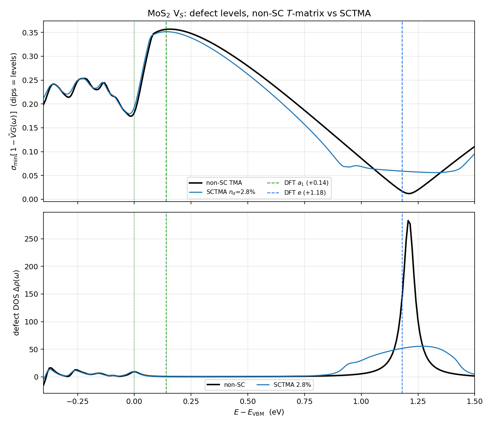

Contents
Derivation: the disorder self-energy hierarchy — 1st Born → SCBA → $T$-matrix → self-consistent $T$-matrix (SCTMA) — and how it maps onto the downfolded electron–defect pipeline
For a dilute random array of identical defects (density $n_d$) the configuration-averaged Green's function is $\bar G(\omega)=[\,\omega-H_0-\Sigma(\omega)\,]^{-1}$; the physics is in how the disorder self-energy $\Sigma$ is built from the single-defect potential $v$. This note derives the standard hierarchy and writes the self-consistent $T$-matrix (SCTMA) equations in the active/rest-downfolded representation we use, so it plugs directly into $T=[1-\tilde V G^A]^{-1}\tilde V$. It also states why SCTMA is the dilute limit of CPA, and what it can (and cannot) fix — in particular the $\sim0.15$ eV under-binding of the occupied V$_S$ $a_1$ band-edge state.
1. The disorder self-energy and its hierarchy
With single-defect potential $v$ and host propagator $G_0(\omega)=[\omega-H_0]^{-1}$:
| Approximation | $\Sigma(\omega)=$ | diagrams summed | propagator between scatterings |
|---|---|---|---|
| 1st/2nd Born (golden rule, EDI) | $n_d\,v\,G_0\,v$ | one rainbow, bare lines | $G_0$ |
| Self-consistent Born (SCBA) | $n_d\,v\,\bar G\,v$ (self-consistent) | all rainbows, dressed lines | $\bar G$ |
| $T$-matrix (TMA) | $n_d\,T[G_0]=n_d\,v[1-G_0 v]^{-1}$ | single-site, all orders in $v$, bare lines | $G_0$ |
| Self-consistent $T$-matrix (SCTMA) | $n_d\,T[\bar G]=n_d\,v[1-\bar G v]^{-1}$ (self-consistent) | single-site all orders + dressed lines | $\bar G$ |
The production EDI code is 1st Born ($\propto|M|^2\delta$, Fermi's golden rule). Our beyond-Born results are the (non-self-consistent) $T$-matrix, $\Sigma=n_d T$ with $T=[1-\tilde V G^A]^{-1}\tilde V$ — this note's target is the next rung, SCTMA.
2. Born and self-consistent Born (SCBA)
Second-order Born uses the bare propagator in the scattering bubble:
SCBA replaces $G_0\to\bar G$ (dressed) and iterates:
For a contact potential $v_{\mathbf k\mathbf k'}=v_0$ this collapses to $\Sigma(\omega)=n_d v_0^2\,\bar G_{\rm loc}(\omega)$ with the local propagator $\bar G_{\rm loc}=\sum_{\mathbf k}\bar G$. SCBA sums the non-crossing (rainbow) diagrams; it gives finite lifetimes and band tails, but each vertex is only $O(v^2)$ — it cannot produce bound states or resonances (those require the single-site ladder to all orders, i.e. the $T$-matrix). This is precisely why a strong, state-binding defect like the S-vacancy needs the $T$-matrix, not Born.
3. Single-site $T$-matrix (the building block)
One defect: the Lippmann–Schwinger / Dyson equation $G=G_0+G_0\,v\,G=G_0+G_0\,T\,G_0$ defines
which resums single-site scattering to all orders; its poles $\det[1-G_0 v]=0$ are the defect bound states.
4. Dilute average → $\Sigma=n_d T$ (non-self-consistent TMA)
For $N_d$ defects at random sites $\mathbf R_i$, the total scattering operator is $\mathcal T=\sum_i T_i+\sum_{i\neq j}T_i G_0 T_j+\cdots$. Averaging over positions and keeping the leading order in density (independent sites; inter-site interference dropped) gives
This is what we compute: $T=[1-\tilde V G^A]^{-1}\tilde V$, $\Sigma=n_dT$, with the intermediate propagator inside $T$ kept bare ($G_0=G^A$).
5. Self-consistent closure (SCTMA)
The propagator a scattering event actually traverses is the effective medium $\bar G$, not the bare $G_0$. Replacing $G_0\to\bar G$ inside the single-site $T$-matrix and solving self-consistently:
Iteration:
to convergence. Diagrammatically SCTMA sums all non-crossing diagrams with each single-site ladder taken to all orders in $v$ and dressed propagators between sites — strictly more than both SCBA (single-site all-orders added) and the non-self-consistent TMA (self-consistent dressing added).
6. Practical form in the downfolded Koster–Slater pipeline
The only change from our current pipeline is to dress the host active resolvent before the block inversion. Currently
SCTMA uses the dressed
with one extra self-consistency loop inside the existing $\omega$-loop. The spectral function keeps its form,
only now $T$ is built from the dressed $\mathcal G$. (The Layer-1 rest dressing $\tilde V$ is unchanged; SCTMA self-consistency is the Layer-2 active resummation made self-consistent.)
7. SCTMA is the dilute limit of CPA
The fully rigorous single-site self-consistency is CPA, which uses the cavity propagator $\mathcal G_{\rm cav}$ (the effective medium with the single site removed) to avoid double-counting the on-site return, and imposes that the average single-site $t$-matrix in the effective medium vanish:
In the dilute single-defect limit $c=n_d\to0$ (host sites have $v_0=0$), the host $t$-matrix is $t_0\approx-\Sigma=O(n_d)$ and the defect one $t_d\approx v[1-\mathcal G v]^{-1}=O(1)$, so the CPA condition reduces to
exactly SCTMA. So SCTMA is CPA to $O(n_d)$; the on-site self-interaction it double-counts is $O(n_d^2)$ — negligible at our $n_d\approx2.8\%$, and removed exactly by the cavity construction if needed.
8. What SCTMA can and cannot fix
- Feedback of broadening/shift into the propagator. Self-consistency moves the poles. For the V$_S$ $a_1$ state — which the non-self-consistent $T$-matrix under-binds by $\sim$0.15 eV, pinning it onto the host VBM edge instead of splitting it off at $\approx+0.14$ eV (DFT) — SCTMA lets the occupied level feel the self-energy it generates and can push it upward. The deep, empty $e$ doublet is already accurate ($+1.21$ eV $=$ DFT) and only fine-tunes.
- Magnitude caveat. The self-consistent correction scales as $\sim\Sigma\,\partial_\omega G\propto n_d$; at dilute $n_d$ it is small, so the improvement to the $a_1$ splitting may be modest — which makes a non-SC-vs-SCTMA comparison a clean quantitative test of how much of the band-edge under-binding is a self-consistency effect.
- Beyond reach. SCTMA is still non-crossing: it omits inter-defect interference (Anderson localization, coherent backscattering) and $O(n_d^2)$ cluster effects, and it is not DFT self-consistency (no charge-density / $\Delta V$ update). Splitting off the occupied $a_1$ exactly is ultimately a self-consistent DFT supercell task; SCTMA is the in-between rung that tests how far propagator dressing alone gets.
Summary. SCTMA solves the single-site $T$-matrix $T=v[1-\mathcal G v]^{-1}$ together with the dressed propagator $\mathcal G=[(G^A)^{-1}-n_dT]^{-1}$ self-consistently — the dilute limit of CPA, one rung above our current $\Sigma=n_dT[G^A]$. Implementation is a single extra self-consistency loop ($G^A\to\mathcal G$) inside the $\omega$-loop. The numerical test below was run for MoS$_2$ V$_S$.
9. Numerical test: does SCTMA fix the $a_1$ under-binding? (MoS$_2$ V$_S$)
Implemented on the gauge-locked Koster–Slater pipeline with the on-site closure $\Sigma_{\rm loc}(\omega)=n_d\,T_{00}(\omega)$ (the $R{=}0$ cell, which carries 99% of $\tilde V$) and the dressed local resolvent $\mathcal G(\omega)=\frac1{N_f}\sum_{\mathbf k}[\omega+i\eta-H_W(\mathbf k)-\Sigma_{\rm loc}(\omega)]^{-1}$, iterated to self-consistency at each $\omega$. Defect levels are read off as dips of $\sigma_{\min}[1-\tilde V\,\mathcal G(\omega)]$ (a $T$-matrix pole drives this to zero). Run at the physical density $n_d=1/36=2.78\%$:
| $a_1$ (eV rel VBM) | $e$ (eV rel VBM) | |
|---|---|---|
| non-SC $T$-matrix | $-0.011$ (shallow dip, $\sigma_{\min}{=}0.18$ — band-edge resonance) | $+1.206$ (sharp, $\sigma_{\min}{=}0.012$) |
| SCTMA ($n_d{=}2.78\%$) | $-0.020$ (shift $-0.009$) | $+1.33$, broadened |
| DFT 9×9 (reference) | $+0.14$ (flat localized band) | $+1.18$ |

Top: $\sigma_{\min}[1-\tilde V G(\omega)]$ (dips = levels). In the $a_1$ region (near 0) the SCTMA (blue) and non-SC (black) curves essentially coincide — self-consistency does not move the $a_1$ toward DFT's $+0.14$. The deep $e$ dip (sharp at $+1.21$ for non-SC) is broadened and slightly shifted up by SCTMA. Bottom: defect DOS $\Delta\rho$ — the sharp non-SC $e$ peak ($\Delta\rho{\approx}285$) is smeared into a broad band ($\Delta\rho{\approx}55$) by the finite-$n_d$ disorder self-energy.Verdict. SCTMA does not cure the $a_1$ under-binding: at the physical density the $a_1$ moves by only $-9$ meV (negligible, and the wrong way), staying pinned at the band edge far from the DFT value $+0.14$ — exactly the $\mathcal O(n_d)$ smallness the §8 estimate predicted. What SCTMA does produce at $n_d=2.78\%$ is a disorder broadening of the deep $e$ level (a finite-concentration lifetime), not a repair of the band-edge state. (Convergence is also only partial — 114/221 $\omega$, failing precisely in the large-$\Sigma$ band-edge region where $a_1$ lives.) The conclusion is sharp: the occupied, band-edge $a_1$ needs genuine DFT-supercell self-consistency (charge-density relaxation); propagator dressing at the $T$-matrix level cannot split it off. Deep, well-separated states (the empty $e$) are accurate already; the $T$-matrix's limitation is specifically the shallow occupied band-edge state.